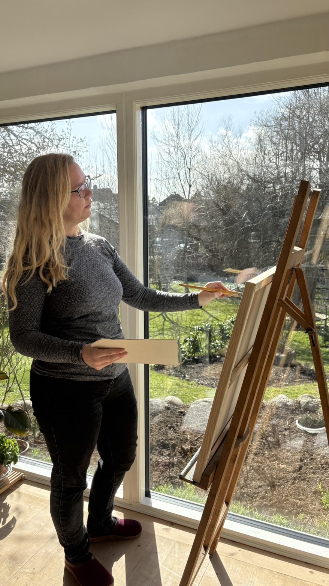

Om kunstneren
Jeg er maler og bor i Svendborg på Fyn, omgivet af det syddanske øhav og den frodige natur, som altid har været min største inspiration.
Mine malerier er primært naturlandskaber - skove, kyststrækninger, marker og det bløde lys, som skifter med årstiderne. Jeg arbejder i acryl på lærred og forsøger at fange stemningen i et sted frem for en nøjagtig gengivelse.
Hvert maleri er unikt og malet i mit lille studie tæt på vandet.
— Astrid, Svendborg